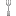

Icon Library Page 04
The icons listed here have been 'described' using multiple types of neural networks. Much of the data is junk. The label is the most likely object in the image, however none of this has been verified by a human. When this page is re-generated the labeling might change.
The best way to use this page is to use the ctrl+f search function.
Page Index
[1] [2] [3] [4] [5] [6] [7] [8] [9] [10] [11] [12] [13] [14] [15] [16] [17] [18] [19] [20] [21] [22] [23] [24] [25] [26] [27] [28] [29] [30] [31] [32] [33] [34] [35] [36] [37] [38] [39] [40] [41] [42] [43] [44] [45] [46] [47] [48] [49] [50] [51] [52] [53] [54] [55] [56] [57] [58] [59] [60] [61] [62] [63] [64] [65] [66] [67]
| image | labels |
|---|---|
| spaghetti squash, flower, spaghetti squash, maraca, nipple, nipple | |
| digital watch, person, analog clock, rock beauty, gong, tam-tam, analog clock | |
| power drill, spaceship, comic book, chain saw, chain saw, chainsaw, stopwatch, stop watch | |
| gong, dog, gong, face powder, chambered nautilus, pearly nautilus, nautilus, loupe, jeweler's loupe | |
| sunscreen, person, wall clock, nipple, book jacket, dust cover, dust jacket, dust wrapper, maraca | |
| whistle, sun, nipple, whistle, ping-pong ball, corn | |
| power drill, dog, chain saw, bearskin, chain saw, chainsaw, chain saw, chainsaw | |
| espresso maker, person, book jacket, bearskin, pick, plectrum, plectron, chain saw, chainsaw | |
| espresso maker, dog, espresso maker, cleaver, platypus, duckbill, duckbilled platypus, duck-billed platypus, Ornithorhynchus anatinus, espresso maker | |
| nematode, flower, digital clock, nematode, nematode, nematode worm, roundworm, digital clock | |
| whistle, person, panpipe, whistle, panpipe, pandean pipe, syrinx, Band Aid | |
| chain saw, person, harmonica, chain saw, chain saw, chainsaw, chain saw, chainsaw | |
| digital clock, tree, analog clock, whistle, pick, plectrum, plectron, maraca | |
| studio couch, tree, thresher, panpipe, spaghetti squash, rotisserie | |
| pool table, phone, pool table, lipstick, pick, plectrum, plectron, revolver, six-gun, six-shooter | |
| revolver, person, panpipe, rock beauty, three-toed sloth, ai, Bradypus tridactylus, chain saw, chainsaw | |
| digital clock, flower, strawberry, whistle, strawberry, Windsor tie | |
| digital clock, person, digital clock, analog clock, pick, plectrum, plectron, analog clock | |
| strawberry, phone, digital watch, strawberry, pick, plectrum, plectron, packet | |
| whistle, sun, consomme, sunscreen, ping-pong ball, ping-pong ball | |
| whistle, tree, maraca, croquet ball, nipple, nipple | |
| punching bag, tree, lemon, spaghetti squash, punching bag, punch bag, punching ball, punchball, spaghetti squash | |
| slot, phone, waffle iron, Windsor tie, pick, plectrum, plectron, chain saw, chainsaw | |
| digital clock, dog, packet, prayer rug, chow, chow chow, packet | |
| folding chair, dog, golden retriever, plate rack, safety pin, Brabancon griffon | |
| chiffonier, dog, lion, lesser panda, golden retriever, orangutan, orang, orangutang, Pongo pygmaeus | |
| slot, person, teddy, golden retriever, red wolf, maned wolf, Canis rufus, Canis niger, golden retriever | |
| whistle, cat, chain saw, bearskin, chain saw, chainsaw, chain saw, chainsaw | |
| ocarina, dog, book jacket, Dandie Dinmont, comic book, chain saw, chainsaw | |
| power drill, person, lotion, whistle, chain saw, chainsaw, chain saw, chainsaw | |
| slot, phone, panpipe, panpipe, panpipe, pandean pipe, syrinx, panpipe, pandean pipe, syrinx | |
| digital clock, phone, book jacket, whistle, comic book, packet | |
| screen, person, ocarina, ocarina, pick, plectrum, plectron, packet | |
| throne, person, maraca, maraca, torch, lotion | |
| digital clock, phone, file, switch, switch, electric switch, electrical switch, sunscreen, sunblock, sun blocker | |
| digital clock, tree, shoji, window screen, hand-held computer, hand-held microcomputer, hand-held computer, hand-held microcomputer | |
| digital watch, phone, analog clock, analog clock, stopwatch, stop watch, stopwatch, stop watch | |
| space bar, phone, hand-held computer, remote control, safe, remote control, remote | |
| nipple, person, Windsor tie, sunscreen, nipple, Petri dish | |
| digital clock, person, analog clock, sunscreen, analog clock, analog clock | |
| moving van, person, moving van, rock beauty, thresher, thrasher, threshing machine, chain saw, chainsaw | |
| theater curtain, person, book jacket, lotion, book jacket, dust cover, dust jacket, dust wrapper, lotion | |
| cleaver, person, espresso maker, frying pan, mortar, pick, plectrum, plectron | |
| hand-held computer, person, analog clock, oil filter, scoreboard, turnstile | |
| Band Aid, phone, spatula, whistle, whistle, hair spray | |
| frying pan, person, nail, letter opener, cleaver, meat cleaver, chopper, chain saw, chainsaw | |
|  | spatula, person, spatula, spatula, spatula, spatula |
| spatula, person, nail, hatchet, loupe, jeweler's loupe, spatula | |
| analog clock, person, assault rifle, assault rifle, pedestal, plinth, footstall, chain saw, chainsaw | |
| can opener, phone, Windsor tie, waffle iron, oboe, hautboy, hautbois, assault rifle, assault gun | |
| theater curtain, person, theater curtain, theater curtain, lipstick, lip rouge, hair spray | |
| theater curtain, sun, theater curtain, theater curtain, binder, ring-binder, hair spray | |
| wall clock, sun, banana, theater curtain, oboe, hautboy, hautbois, theater curtain, theatre curtain | |
| binder, person, theater curtain, theater curtain, binder, ring-binder, hair spray | |
| binder, person, safety pin, theater curtain, beaker, hair spray | |
| binder, person, theater curtain, theater curtain, hair spray, hair spray | |
| theater curtain, phone, theater curtain, theater curtain, hair spray, hair spray | |
| matchstick, person, matchstick, nematode, matchstick, jack-o'-lantern | |
| whistle, person, pick, Japanese spaniel, pick, plectrum, plectron, stopwatch, stop watch | |
| panpipe, tree, chiffonier, spaghetti squash, panpipe, pandean pipe, syrinx, waffle iron | |
| analog clock, person, pick, pick, pick, plectrum, plectron, pick, plectrum, plectron | |
| slot, tree, Christmas stocking, maraca, slot, one-armed bandit, screen, CRT screen | |
| whistle, person, nipple, whistle, chain saw, chainsaw, lotion | |
| whistle, person, spatula, whistle, pick, plectrum, plectron, whistle | |
| switch, person, switch, sunscreen, remote control, remote, remote control, remote | |
| espresso maker, person, waffle iron, milk can, letter opener, paper knife, paperknife, power drill | |
| oil filter, phone, nipple, komondor, jersey, T-shirt, tee shirt, packet | |
| slot, tree, packet, safety pin, pick, plectrum, plectron, stopwatch, stop watch | |
| nipple, dog, lotion, wire-haired fox terrier, lighter, light, igniter, ignitor, packet | |
| slot, person, slot, whistle, pick, plectrum, plectron, packet | |
| throne, phone, throne, whistle, bearskin, busby, shako, throne | |
| combination lock, person, analog clock, cleaver, pick, plectrum, plectron, cleaver, meat cleaver, chopper | |
| hourglass, phone, lotion, nipple, lighter, light, igniter, ignitor, packet | |
| screen, tree, lotion, whistle, pick, plectrum, plectron, packet | |
| digital clock, person, chiffonier, wall clock, panpipe, pandean pipe, syrinx, scoreboard | |
| screen, tree, packet, milk can, pick, plectrum, plectron, screen, CRT screen | |
| screen, person, Windsor tie, Windsor tie, pick, plectrum, plectron, screen, CRT screen | |
| whistle, person, oil filter, whistle, oil filter, packet | |
| soap dispenser, person, panpipe, screen, pick, plectrum, plectron, stopwatch, stop watch | |
| sunscreen, person, lotion, whistle, hand-held computer, hand-held microcomputer, tripod | |
| switch, person, Band Aid, whistle, assault rifle, assault gun, Band Aid | |
| bearskin, person, panpipe, plunger, panpipe, pandean pipe, syrinx, hatchet | |
| hourglass, person, hourglass, hair spray, hourglass, hourglass | |
| analog clock, person, pick, digital clock, pick, plectrum, plectron, pick, plectrum, plectron | |
| wall clock, person, Band Aid, hair spray, lighter, light, igniter, ignitor, packet | |
| digital clock, car, Band Aid, whistle, chain saw, chainsaw, chain saw, chainsaw | |
| whistle, person, jersey, punching bag, bearskin, busby, shako, packet | |
| scoreboard, person, scoreboard, whistle, comic book, Band Aid | |
| face powder, person, face powder, face powder, pick, plectrum, plectron, panpipe, pandean pipe, syrinx | |
| digital watch, phone, stopwatch, sunscreen, stopwatch, stop watch, stopwatch, stop watch | |
| switch, person, panpipe, whistle, plunger, plumber's helper, plunger, plumber's helper | |
| digital clock, person, jersey, knee pad, langur, chain saw, chainsaw | |
| baseball, person, sunscreen, pick, pick, plectrum, plectron, pick, plectrum, plectron | |
| whistle, person, pick, pick, pick, plectrum, plectron, pick, plectrum, plectron | |
| ocarina, person, nipple, ocarina, nipple, packet | |
| whistle, sun, sunscreen, candle, pick, plectrum, plectron, chain saw, chainsaw | |
| stopwatch, person, barometer, pick, otterhound, otter hound, stopwatch, stop watch | |
| power drill, person, digital watch, pick, Dandie Dinmont, Dandie Dinmont terrier, custard apple | |
| lotion, phone, sunscreen, sunscreen, sunscreen, sunblock, sun blocker, nipple | |
| power drill, person, digital watch, Windsor tie, bearskin, busby, shako, stopwatch, stop watch |